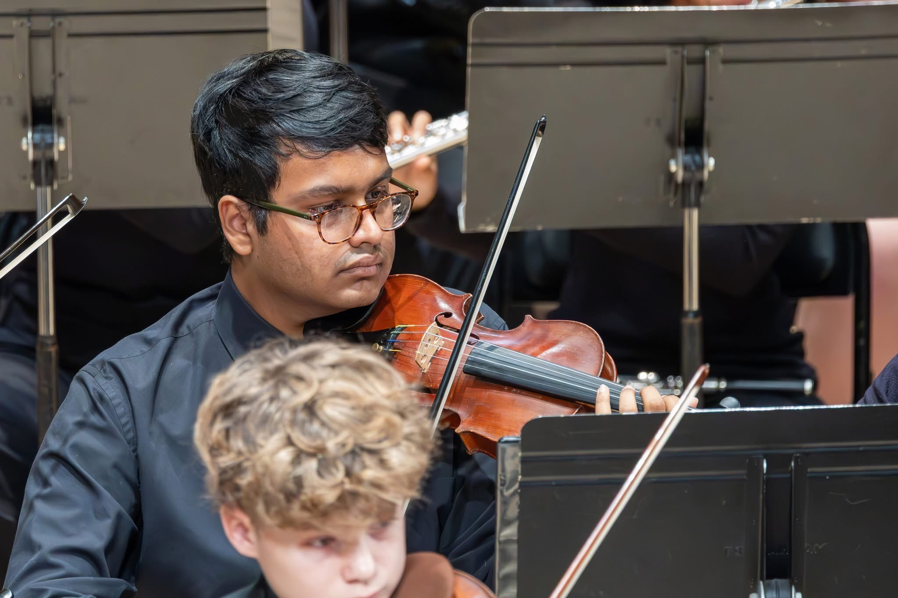

My Life in Music

Music has been one of the most important parts of my life. As a violinist, I have learned that music is not just about playing the correct notes. It is about shaping emotion, telling a story, and giving sound to feelings that are sometimes too complex to explain with normal words.
Through orchestra, solo music, and music theory, I have developed a deeper appreciation for how music works. I enjoy pieces that feel dramatic, lyrical, intense, and emotional. I especially like music that feels like it has a hidden inner world beneath the surface.
Music I Enjoy
I enjoy a wide range of music, but classical violin music has a special place in my life. Some pieces feel powerful because they combine beauty with struggle, tension, and release.
- Violin concertos with emotional and lyrical melodies
- Orchestral music with dramatic energy
- Music that feels intense, expressive, or cinematic
- Pieces that show both technical skill and emotional depth
Concert Videos
Music has been one of the most meaningful parts of my life, especially through orchestra. Instead of only listing music I enjoy, I wanted this page to include performances that I was actually part of. These concert videos represent years of rehearsal, discipline, collaboration, and growth as a violinist.
Below are concert videos from my time performing with Hochstein Philharmonia Orchestra and Hochstein Youth Symphony Orchestra.
Hochstein Philharmonia Orchestra
Hochstein Philharmonia Orchestra was one of the ensembles that helped me grow as an orchestral musician. Through these concerts, I developed my ability to listen, blend, follow a conductor, and contribute to a larger musical sound.
Fall Concert
Date: Sunday, October 22, 2023
Pieces Performed: Add pieces here later.
Winter Concert
Date: Sunday, February 11, 2024
Pieces Performed: Add pieces here later.
Spring Concert
Date: Sunday, May 5, 2024
Pieces Performed: Add pieces here later.
Fall Concert
Date: Sunday, October 20, 2024
Pieces Performed: Add pieces here later.
Winter Concert
Date: Sunday, February 9, 2025
Pieces Performed: Add pieces here later.
Spring Concert
Date: Sunday, May 4, 2025
Pieces Performed: Add pieces here later.
Hochstein Youth Symphony Orchestra
Hochstein Youth Symphony Orchestra gave me the opportunity to perform in a more advanced orchestral setting. These concerts represent another stage of my growth as a musician, especially as I continued developing my tone, confidence, and ensemble awareness.
Fall Concert
Date: Sunday, November 16, 2025
Pieces Performed: Add pieces here later.
Winter Concert
Date: Sunday, February 8, 2026
Pieces Performed: Add pieces here later.
Spring Concert
Date: Sunday, May 10, 2026
Pieces Performed: Add pieces here later.